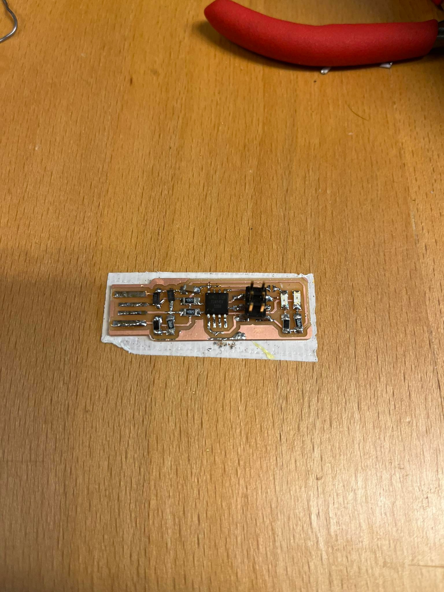
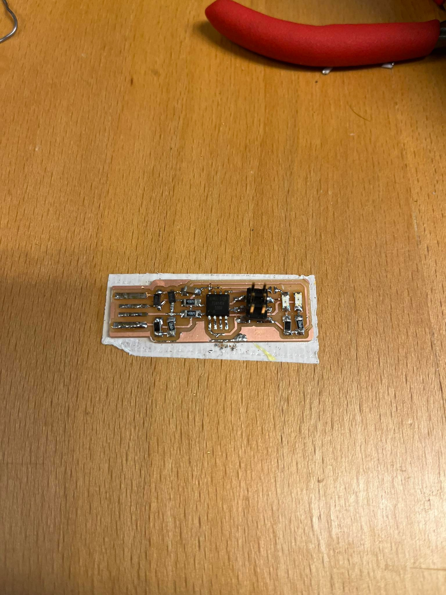

Framleiðsla, hönnun og forritun ígreyptra kerfa
Undirbúningsvinna
Ég vann verkefnið með Arnari, Gunnari og Tómasi.
Verkefnið samanstendur af hanna rás, framleiða hana, forrita og læra að nota inntaks- og úttaksbúnaði.
Hönnun og Framleiðsla Rása
Við þurftum að hanna og framleiða kóðarann en bara lóða kubbinn, (það er rásinn með takkann :))). Við notuðum Eagle til þess að hanna rásina og inkskape til þess að búa til png mynd af rásinni sem við notuðum til þess að búa til g-kóða fyrir fræsarann. Hafliði hjálpaði okkur að stilla fræsinn.

Eftir það lóðuðum við alla íhluti á rásirnar.
 

Svo prófuðum við rásina með mælitæki til þess að sjá hvort allir íhlutirnir eru rétt tengdir.
Næst hjálpaði Hafliði okkur að forrita kubbinn með forritarann og þaðann gátum við notað Arduino IDE til þess að fikta með kóðann og notuðum takkann til að stjórna díóðurnar.
Forritun ígreypta kerfa
Í þessum part af verkefninu áttum við að nota Arduino Uno til þess að forrita hluti.
Hlutirnir sem við ákvöðum að nota voru oled skjár og fjarlægðarskynjari. Við fengum líka brauðbretti til að tengja þetta allt saman. Hugmyndin okkar var að nota oled skjáinn til þess að sýna okkur fjarlægðarskynjarinn var að lesa.

Við notuðum við Arduino IDE til þess að forrita hlutina.


En lendum í smá vandræðum með að stilla Arduino IDE. En það var vegna þess við vorum með rangan "Comp" stilltann.
Hér má sjá þetta in action :)